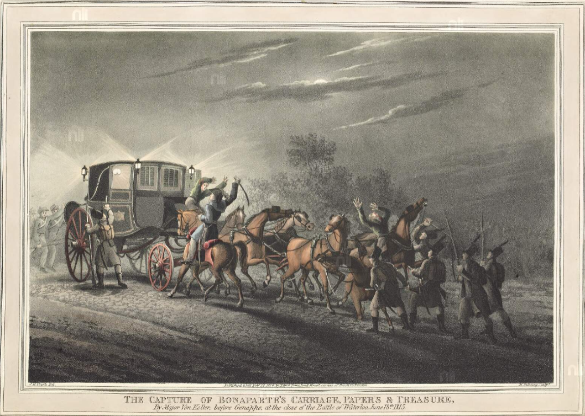
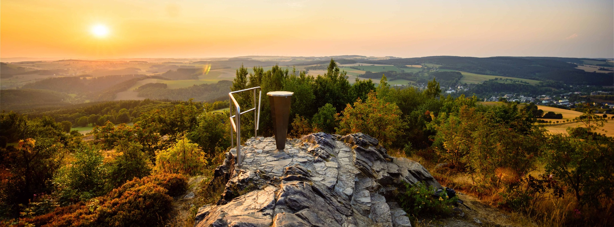
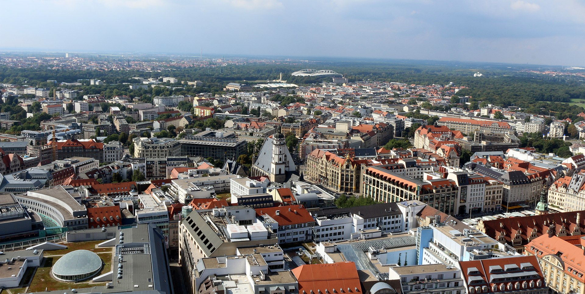
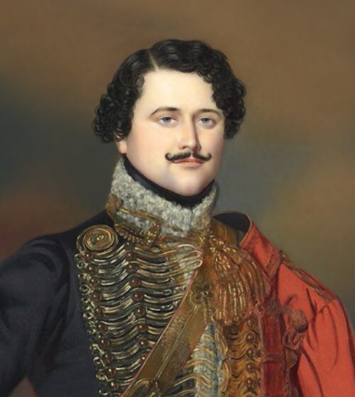
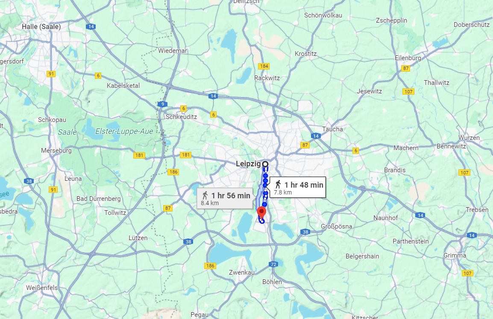

라이프치히 전투 (1) - 사지(死地)인가 생지(生地)인가?
게시: 2025-05-26T08:44:58+09:00
10월 14일 정오 무렵 나폴레옹이 라이프치히에 도착하면서 이제 우리는 라이프치히 전투가 시작되는 것을 보게 됩니다. 본격적인 전투 시작에 앞서, 왜 나폴레옹은 하필 라이프치히에서 운명의 결전을 벌이게 되었는지 살펴보도록 하겠습니다.

(나폴레옹하면 우리는 백마를 타고 알프스 산맥을 넘는 모습을 흔히 연상하지만 대개의 경우 나폴레옹은 전장으로 이동할 때 마차를 탔습니다. 이는 나폴레옹이 사관학교 출신치고는 말 타는 것에 꽤나 미숙한 편이기 때문이기도 했고, 누가 뭐래도 말을 타는 것은 의외로 꽤 힘든 일이기 때문이었습니다. 당시 바트 뒤벤에서 아침 7시에 출발한 나폴레옹이 마차를 타고 35km를 이동하여 라이프치히에 도착했을 때는 정오 무렵이었는데, 속력을 계산해보면 대략 7km/h로서 완전무장한 병사가 잘 포장된 도로를 따라 걷는 속도 4km/h의 2배를 넘지 못합니다. 그림은 1815년 워털루 전투 직후 프로이센군 폰 켈러(von Keller) 소령이 나폴레옹의 마차를 노획하는 장면입니다. 물론 나폴레옹은 그 속에 없었습니다.) 기억들 하시겠습니다만 라이프치히는 나폴레옹이 고른 전장이 아니었습니다. 8월 26, 27일의 드레스덴 전투에서 나폴레옹에게 참패를 겪은 연합군 수뇌부는 대체 무엇이 잘못 되었던 것인지를 곱씹어 보았습니다. 패배의 원인이야 여러가지가 있었지만, 알고 보면 가장 큰 이유는 나폴레옹의 천재성 때문이라기보다는 연합군이 너무나 느리게 움직였기 때문이었습니다. 8월 24일부터 드레스덴에 도착하기 시작한 연합군은 이틀 동안이나 허송세월하며 나폴레옹이 드레스덴으로 돌아오기를 기다려주는 듯한 모습을 보여주었는데, 거기에는 알렉산드르의 결정 장애도 한 몫을 했지만 본질적 이유는 연합군 병력들의 집결에 시간이 너무 오래 걸렸다는 점이었습니다. 여기에는 이제 막 새로 참전한 오스트리아군의 행군이 특히 느렸던 점이 큰 기여를 했지만 보헤이마에서 드레스덴으로 넘어오는 통로가 페터스발트(Peterswald) 고갯길 하나였다는 점이 큰 몫을 차지했습니다.

(사실 얼츠거비어거(Erzgebirge)라는 말 자체가 '광석(Erz) 산맥(Gebirge)'이라는 뜻으로서, 얼츠거비어거 산맥이라는 말 자체가 역전앞이라는 말처럼 중복적인 표현입니다. 사진은 보헤미아와 작센의 자연 국경인 얼츠거비어거 산맥의 아름다운 하이킹 코스 광고용 사진입니다.) 절치부심한 연합군 수뇌부는 이번에는 하나의 통로를 통하지 않고 얼츠거비어거 산맥 여러 고갯길을 한꺼번에 이용하여 작센 평야로 쳐들어가기로 했습니다. 그러자니 필연적으로 동서 방향으로 길게 늘어진 얼츠거비어거 산맥을 따라 병력을 산개시켜야 했는데, 그러다보니 병력 이동 속도 향상이라는 점 외에도 연합군이 노리던 두 번째 목표를 자연스럽게 이룰 수 있었습니다. 즉 엘베강을 낀 드레스덴에 틀어박힌 나폴레옹이 자신에게 불리한 전장으로 스스로 기어나오도록 강요하는 것이었습니다. 이는 나폴레옹이 자신과 파리 사이를 잇는 통신로에 적군이 끼어드는 것을 극도로 싫어한다는 것을 이용하는 전략이었습니다. 얼츠거비어거를 산개한 채로 넘은 연합군 병력들이 재집결하되, 나폴레옹의 후방 통신선을 위협하는 교통의 요지는 바로 작센 왕국 제2의 도시, 라이프치히였습니다.

(라이프치히 시내 전경입니다. 냉전시절 동독에 속했던 도시인 라이프치히는 지금 작센 내에서는 드레스덴을 젖히고 가장 많은 인구인 63만을 자랑하는 도시이고, 독일 전체에서는 8위를 차지하는 도시입니다.) 이런 점들을 고려하여 10월의 공격 계획을 짜면서 슈바르첸베르크와 블뤼허, 베르나도트는 라이프치히에서 나폴레옹을 친다는 기본 계획에 이미 동의한 상태였습니다. 물론 이건 어디까지나 잠정적인 기본 계획일 뿐, 실제로 나폴레옹과 싸우게 될지, 싸운다고 하더라도 정말 라이프치히에서 싸우게 될지는 아무도 장담하지 못했습니다. 누가 뭐래도 연합군의 수뇌부엔 자강두천 베르나도트와 그나이제나우 빼고는 뛰어난 전략가라고 할 사람이 없었고, 사실 그 둘도 나폴레옹의 사령부에서라면 급이 한참 떨어지는 인재에 불과했습니다. 그런데도 천재 중의 천재 나폴레옹을 상대로, 연합군의 계획이 정통으로 먹혔다는 것은 놀라운 일이었습니다. 더군다나, 훗날 프로이센의 요크 백작이 회고하며 쓴 기록에 따르면 라이프치히는 나폴레옹에게 있어 그야말로 최악의 사지(死地)였습니다. 패배할 경우 탈출로가 거의 없이 사방이 꽉 막힌 곳이기 때문이었습니다. 당시 라이프치히 전투에 참전하여 허벅지에 부상을 입었던 마르보 (Jean-Baptiste Antoine Marcelin Marbot) 대령의 기록에도, 라이프치히에서 프랑스군의 퇴로는 딱 하나, 뤼첸 쪽으로의 도로 밖에 없었다고 되어 있고, 실제로 나폴레옹은 여기서의 패전 이후 바로 그 도로를 이용하여 프랑크푸르트까지 후퇴했습니다. 대체 나폴레옹 같은 천재가 왜 연합군의 의도대로 그런 사지에서 싸워 자멸했던 것일까요?

(제 블로그에 자주 등장하는 마르보 대령은 의외로 1813년에도 대령 계급이었는데, 가장 큰 이유는 당시 고작 31세의 젊은 나이였기 때문이었습니다. 그는 라이프치히 전투에서도 부상을 입었는데 직후에 벌어진 하나우 전투에서 또 부상을 입었습니다. 그는 훗날 (다른 많은 사람들처럼) 회고록을 썼는데, 그의 회고록이 유명한 이유는 나폴레옹 본인의 극찬을 받았기 때문이었습니다. 반대로 말하면 그의 회고록 내용도 많이 왜곡되어 있을 수 있다는 소리지요. 이 초상화는 1815년 그려진 것입니다.) 일단 일이 이렇게 되어버린 것은 나폴레옹과의 결전을 회피하고 삼면에서 그를 포위한 채 괴롭힌다는 연합군의 트라헨베르크 의정서가 매우 뛰어난 작전안이기 때문이었다는 것을 부정할 수 없습니다. 베르나도트가 이 안을 처음 내밀었을 때 연합군 수뇌부, 특히 프로이센측 사람들은 이런 겁장이 같은 작전안에 눈살을 찌푸렸지만, 결과적으로 이게 맞았던 것입니다. 그러니까 나폴레옹의 몰락을 불러온 것에는 베르나도트의 기여도가 매우 컸다는 소리입니다. 결국 어느 방향으로 도전해도 뒤통수만 얻어맞을 뿐 뾰족한 전과를 올리지 못한 나폴레옹은 결국 엘베강 우안을 모두 포기하고 물러서서 연합군이 먼저 움직이기를 기다려야 했는데, 언제나 공격을 주도했던 나폴레옹이 이렇게 선제공격권을 적에게 순순히 내줬다는 것 자체가 심각한 일이었습니다. 여기에는 그랑다르메의 질적인 저하와 함께, 나폴레옹의 건강이 매우 나빠진 상태였다는 점도 크게 기여했습니다. 그렇다고 1813년 10월에 나폴레옹이 바보 멍청이가 되었다는 이야기는 절대 아니었습니다. 연합군이 라이프치히에서 싸우기를 바라마지 않는다는 것을 뻔히 알면서도 그 덫 안으로 나폴레옹이 뛰어들어간 것은 나폴레옹이 그 덫을 부러뜨리고 연합군을 패퇴시킬 자신감이 있었기 때문이었습니다. 정확하게는 자신감이라기보다는 그래야만 할 이유가 있기 때문이었습니다. 나폴레옹은 보급품 부족으로 인해 더 이상 작전을 지속하기 어려웠고, 본국 프랑스에서도 추가 병력을 징집하기 곤란한 상황이었습니다. 따라서 언제 어디서든 연합군이 결전 장소를 마련해주면 거기가 라이프치히가 아니라 모스크바라고 해도 감지덕지하며 싸워야 할 형편이었습니다. 게다가 나폴레옹에게 라이프치히는 전술적으로 활용할 수 있는 이점이 매우 많은, 매력적인 지형을 가진 곳이었습니다. 먼저, 라이프치히는 일종의 축소된 엘베강 전선이었습니다. 여러 번 반복했던 이야기지만, 8월 중순 휴전이 종료된 이후 나폴레옹이 공격이 아니라 엘베강 전선을 중심으로 한 수비를 택한 이유는 3개 방면으로 분산된 연합군을 상대로 효율적으로 싸우려면 내선이동의 장점을 이용하려는 것이었습니다. 이미 엘베강 전선은 무너졌지만 라이프치히에서 연합군에게 포위되더라도 나폴레옹은 여전히 내선이동의 장점을 살릴 자신감을 가지고 있었습니다. 하지만 내선이동이라는 것은 어느 정도 시간과 거리의 규모가 있을 때 장점이 있는 것입니다. 기존의 엘베강 전선은 거리 단위가 컸으므로 적이 100km를 움직여야 할 때 아군은 그 70%만 움직인다고 해도 30km의 이득, 즉 하루 이상의 행군이라는 시간을 벌게 된다는 이점을 가지고 있었습니다. 그러나 라이프치히 주변으로 전선이 축소되면 여전히 30%의 이점을 가진다고 해도 그에 따른 시간 절약 단위가 기껏해야 1시간 정도로 줄어들게 됩니다. 머스켓 소총으로 싸우던 시절, 하루라면 모를까 1시간이 큰 의미를 가질 수 있었을까요?

(라이프치히 전장의 규모를 보여주는 척도입니다. 라이프치히 전투 첫날 주요 전투 현장이었던 라이프치히 외곽 마클리베르크(Markkleeberg)와 라이프치히 중심가와의 거리는 8km 정도에 불과합니다.) 나폴레옹은 라이프치히 주변에서라면 시간과 거리를 자신에게 유리하게 왜곡시킬 자신이 있었기 때문에 라이프치히를 전장으로 받아들인 것이었습니다. 나폴레옹이 그 사이에 양자역학이라도 공부했던 것일까요? Source : The Life of Napoleon Bonaparte, by William Milligan Sloane Napoleon and the Struggle for Germany, by Leggiere, Michael V With Napoleon's Guns by Colonel Jean-Nicolas-Auguste Noël https://www.napoleon.org/en/history-of-the-two-empires/timelines/1813-and-the-lead-up-to-the-battle-of-leipzig/ http://www.historyofwar.org/articles/campaign_leipzig.html https://www.napolun.com/mirror/napoleonistyka.atspace.com/Leipzig_battle.htm https://www.thenapoleonicwars.net/battle-of-the-nations https://catalogue.nli.ie/Record/vtls000512227 https://www.outdooractive.com/en/hikes/the-ore-mountains/hikes-in-the-ore-mountains/1455484/ https://en.wikipedia.org/wiki/Leipzig https://en.wikipedia.org/wiki/Marcellin_Marbot